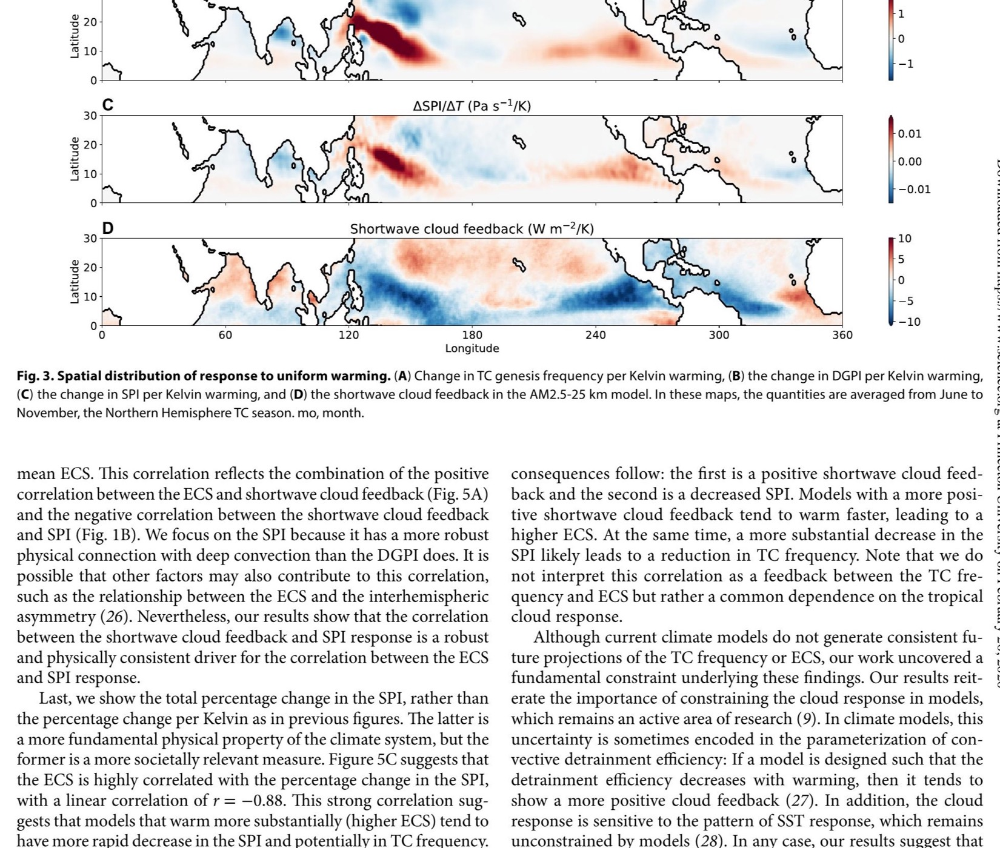
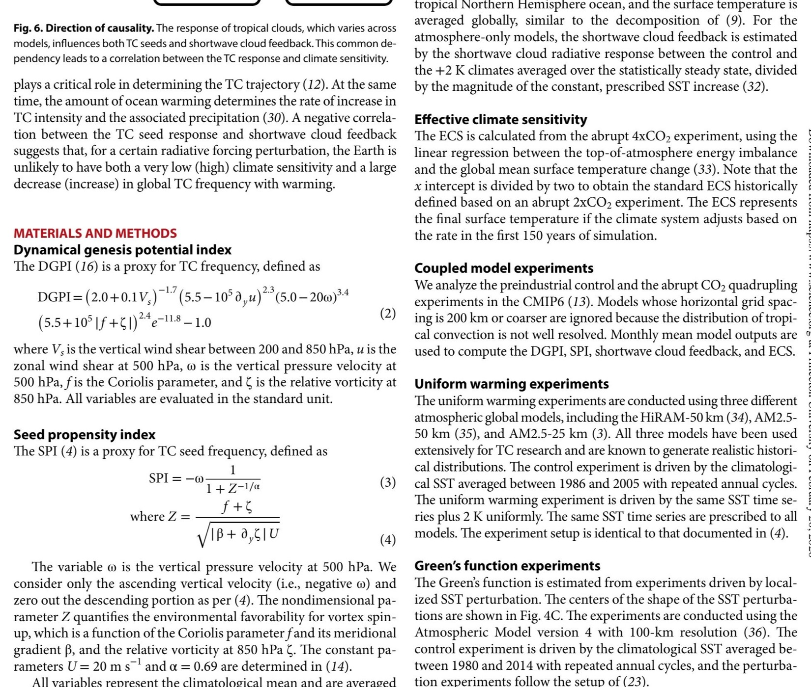
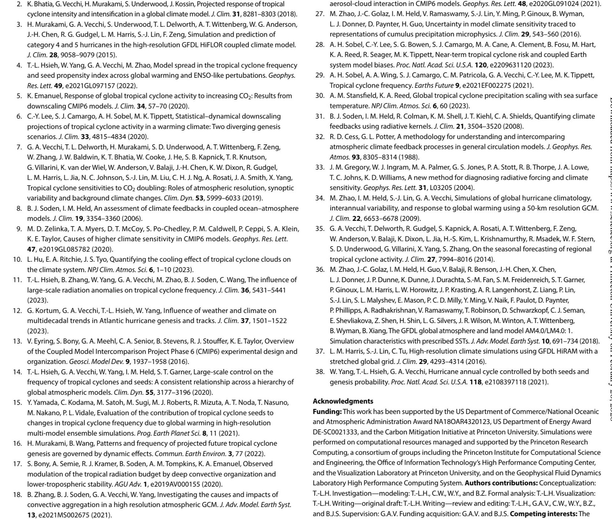

Anticorrelation
Models with stronger positive shortwave cloud feedback tend to show larger TC-seed reductions
Science Advances (2024)
Cross-model analysis links tropical cloud-radiative response to both climate sensitivity and tropical cyclone seed variability, helping explain projected TC-frequency uncertainty.
Anticorrelation
Models with stronger positive shortwave cloud feedback tend to show larger TC-seed reductions
Cross-Hierarchy Robust
Relationship appears across CMIP6 coupled models and high-resolution atmospheric TC simulations
ECS Link
Higher effective climate sensitivity tends to co-occur with stronger decreases in seed propensity
Paper Citation
Hsieh, T.-L., G. A. Vecchi, C. Wang, W. Yang, B. Zhang, and B. J. Soden, 2024: Dependence of Tropical Cyclone Seeds and Climate Sensitivity on Tropical Cloud Response. Science Advances, 10, eadi2779. https://doi.org/10.1126/sciadv.adi2779 (published September 11, 2024).
Are future changes in tropical cyclone frequency and uncertainty in effective climate sensitivity independent, or do they share a common physical driver tied to tropical cloud response?
Rendered from Hsieh et al. (2024), Science Advances, https://doi.org/10.1126/sciadv.adi2779.
Figure A

Figure B

Figure C

The paper suggests that constraining tropical cloud feedback uncertainty can simultaneously constrain both global-mean warming uncertainty and tropical cyclone frequency projections, rather than treating them as independent problems.